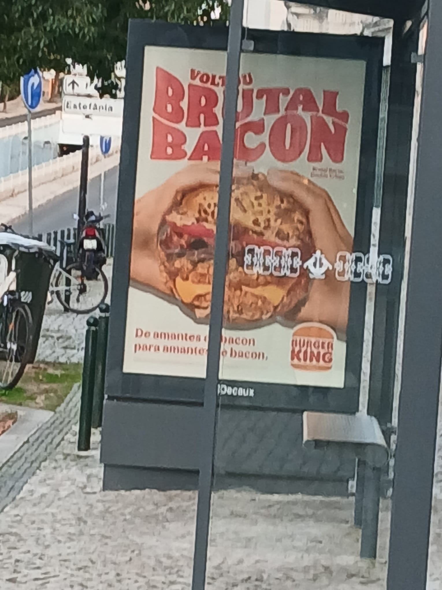

Falácia no anúncio do Burger King
No anúncio do hambúrguer Brutal Bacon, do Burger King, uma falácia é utilizada para incentivar compras.
A falácia utilizada é o apelo ao prazer(ad delectationem).
Esta falácia consiste no uso de certos objetos ou palavras para atiçar a sensibilidade do interlocutor.
Neste caso, a falácia consiste na utilização do hambúrguer para tentar atraír compradores.
